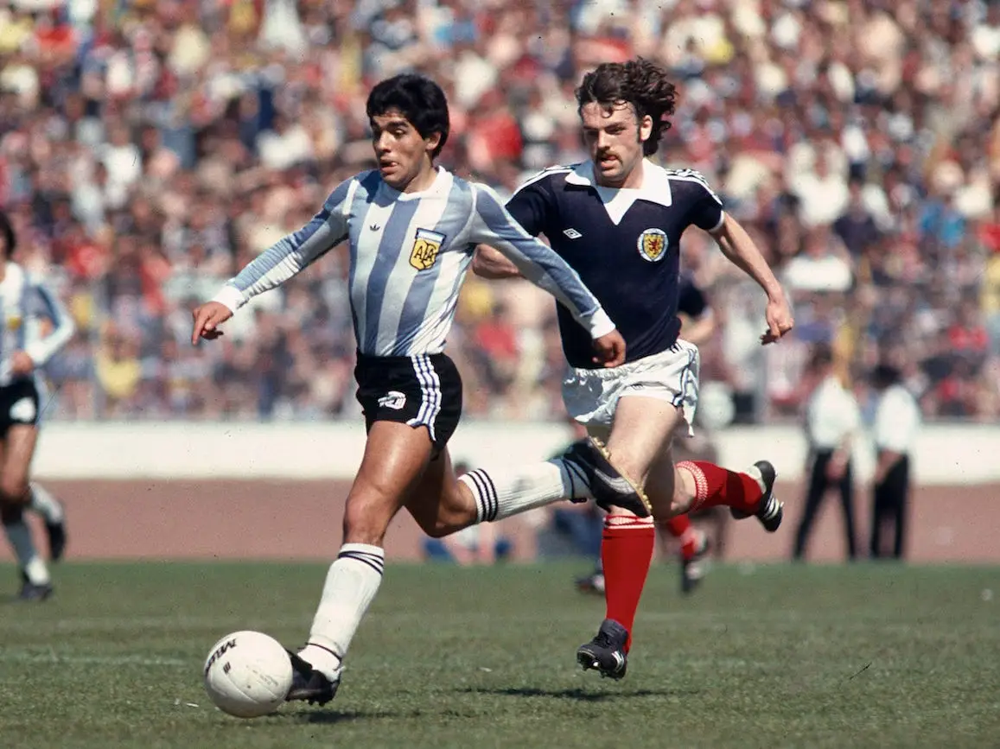
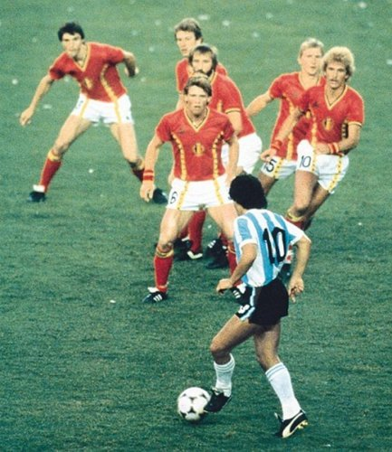
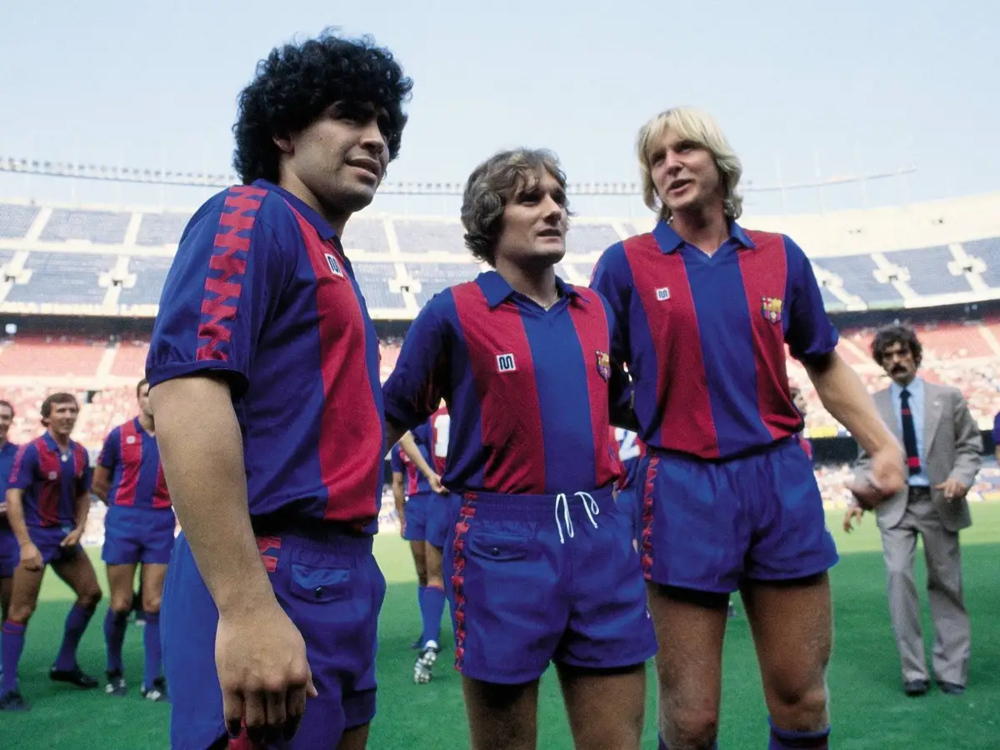
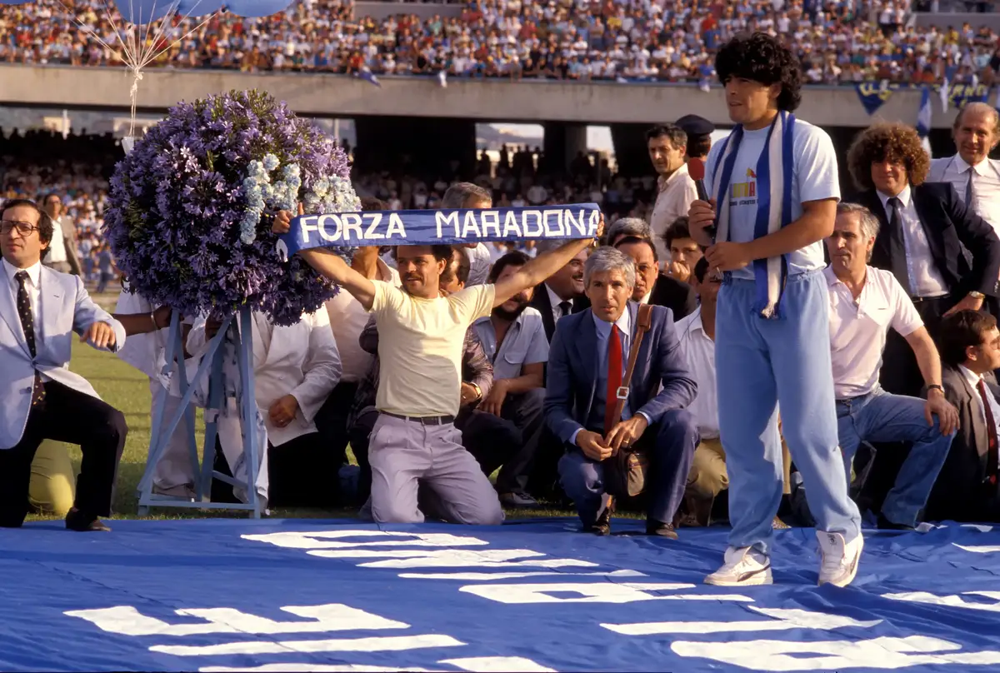
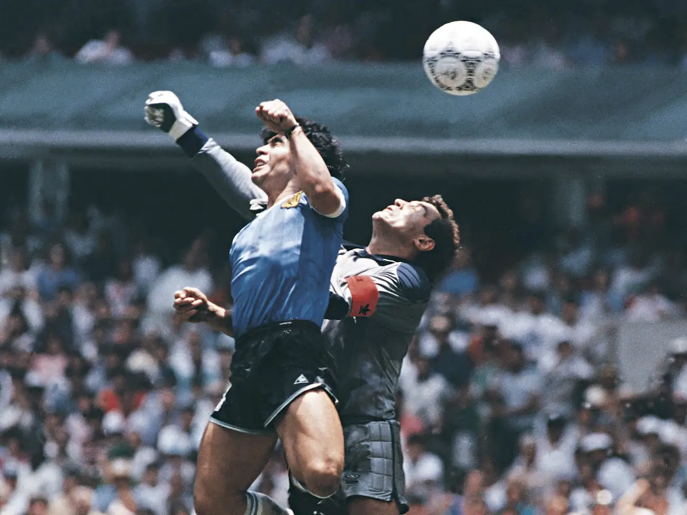
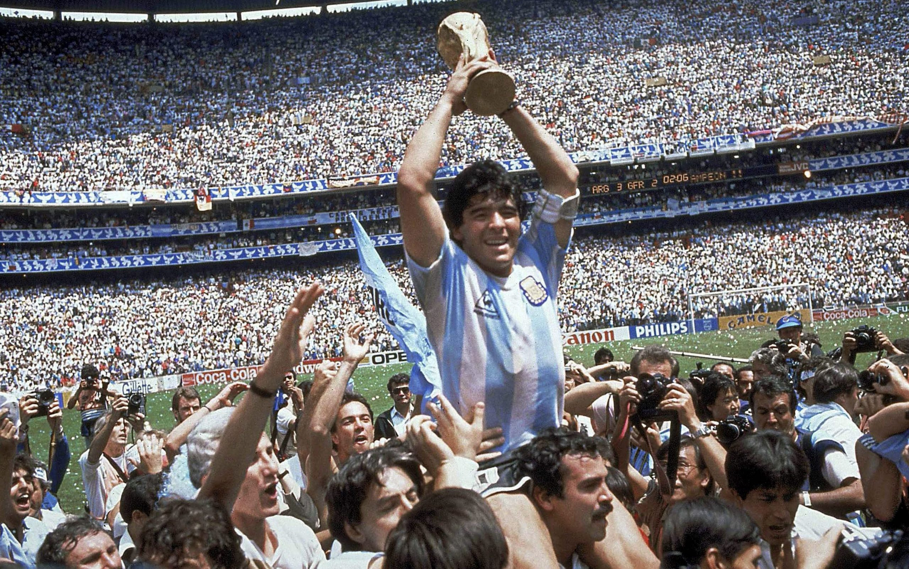
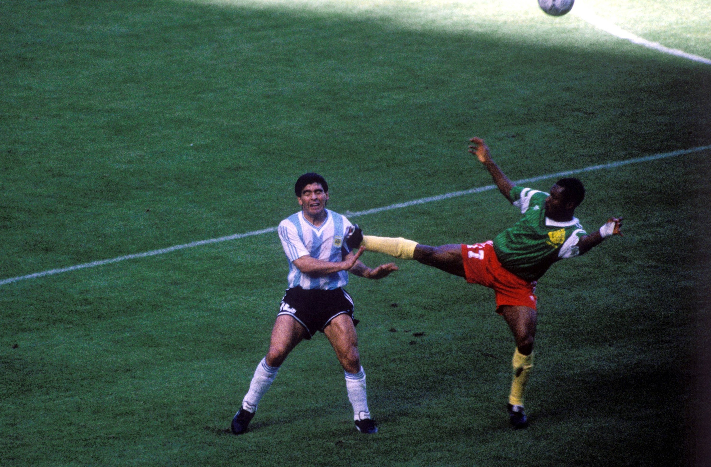

Maradona was renown for his pre-game showmanship, goalscoring ability, ball control
and an aptitude for creating scoring opportunities for himself and his teammates. However, Maradona was
also known for his controversial moments.
Thus, it is no surprise that Maradona's talents and trickery produced moments that football fans
recognize as some of the most memorable in the history of the game.

Maradona scores his first goal vs Scotland.
This would mark the beginning of a legendary player for the Argentine national team.
Maradona's pregame warmup with Napoli (1989)A compilation of all of Maradona's goals for Napoli

Maradona dribbling against Belgium at the 1982 World Cup.
One of the most iconic football photos of all time.
Maradona's goal vs Real Madrid resulted
in a standing ovation from rival fans. He was the first player to receive an ovation
from Real Madrid fans. Only two FC Barcelona players have received
ovations from Real Madrid fans after Maradona; Ronaldinho in 2005 and Andres Iniesta in 2015.
This is significant due to the historic rivalry between the two clubs. (1983)

Maradona's transfer to FC Barcelona in 1982 resulted in a transfer
fee record at the time (total of $3 million). He would spend two seasons at
the club. Despite impressive performances, he was unable to win a league title.
Maradona was directly involved in a mass brawl at the 1984 Copa del Rey Final.
Athletic Bilbao's Miguel Sola provoked Maradona at full time as Barcelona lost 1–0. Maradona snapped and the two exchanged words.
Maradona headbutted Sola, elbowed a Bilbao player in the face and attacking another player with his knee, knocking him out cold.
This would be the last time Maradona ever put on an FC Barcelona shirt.

Maradona's transfer to Napoli in 1984 resulted in another transfer fee record
(total of $5 million). After one season, he was voted the Italian league player
of the year.
At the 1986 World Cup, Maradona scored two goals against England in the quarterfinal.
His two goals against England— one of which would later be known as the "Hand of God" —
are two of football's most famous ever.

Maradona scores the "Hand of God" against English keeper Peter Shilton.
Maradona would confirm in his autobiography years later that he scored the goal with his hand.
Four minutes after the "Hand of God", Maradona begins a solo run from the middle of the pitch
This goal is considered to be one of the greatest individual goals of all time. This goal would later come to be known
as "Goal of the Century."

Maradona lifts the 1986 World Cup trophy.

Maradona is fouled vs Cameroon at the 1990 World Cup.
(Maradona holds the record of being the most fouled player at a World Cup
and in the tournament's history. He received a record high of 53 fouls at the 1986 World Cup.)